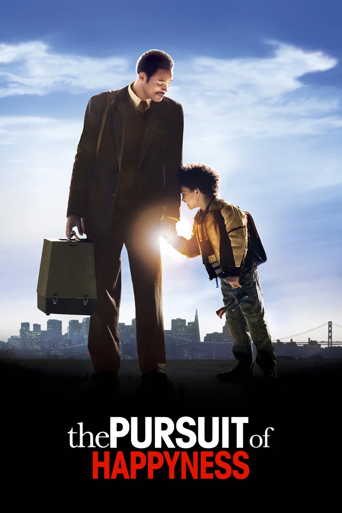

Hola, soy Carolina Corradi, apasionada por el deporte, la tecnología y la educación.
Mi objetivo es integrar la inteligencia artificial, la biomecánica y el análisis de datos para mejorar la gestión y el rendimiento deportivo.
Habilidades
Estas son algunas de las habilidades que mejor representan mi perfil profesional.
Inteligencia Artificial
Aplicación de herramientas de IA para educación, deporte, análisis y automatización.
Biomecánica Deportiva
Análisis del movimiento, evaluación técnica y estudio de variables de rendimiento.
Gestión Deportiva
Organización de eventos, coordinación de equipos y desarrollo de procesos institucionales.
Análisis de Datos
Uso de planillas, dashboards y bases de datos para tomar mejores decisiones.
Capacitación
Diseño de cursos, presentaciones y materiales educativos para diferentes públicos.
Mis 3 Películas Favoritas
Estas películas me inspiran por sus historias de superación, estrategia, liderazgo y crecimiento personal.
En busca de la felicidad

Una historia sobre esfuerzo, resiliencia y perseverancia. Muestra cómo la constancia puede transformar una situación difícil en una oportunidad de crecimiento.
Moneyball
Una película ideal para quienes aman el deporte y los datos. Refleja cómo el análisis estadístico puede cambiar la forma de tomar decisiones deportivas.
El juego de la imitación
Inspirada en Alan Turing, conecta historia, tecnología e inteligencia artificial. Es una película que invita a valorar la innovación y el pensamiento diferente.
Mis 3 Temas Favoritos
Estos son algunos de los temas que más me interesan y que forman parte de mi trabajo, mis estudios y mis proyectos.